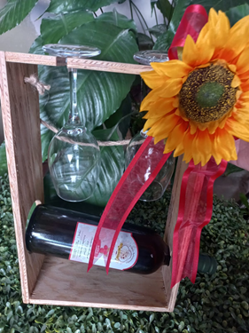

Caja portavinos 2
Sorprende a tus seres queridos con esta sofisticada caja de regalo, que combina el placer de un buen vino con la elegancia de unas copas finamente presentadas. Perfecta para cualquier ocasión especial, esta caja ha sido diseñada para impresionar y deleitar los sentidos.
Botella de Vino: Disfruta de una exquisita botella de vino seleccionada por su sabor y calidad superior. El vino viene en un elegante soporte de madera negra, añadiendo un toque de sofisticación a la presentación.
Copas de Vino: La caja incluye dos copas de vino, colgadas de manera elegante dentro de la caja. Estas copas están diseñadas para realzar la experiencia de degustación del vino, ofreciendo una sensación de lujo y exclusividad.
Transforma cualquier ocasión en un momento especial con nuestra Caja de Regalo Premium de Vino y Copas. Un regalo que no solo habla de buen gusto, sino también de aprecio y elegancia.